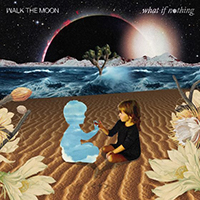
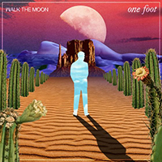
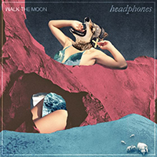

Image source: here
Walk the Moon started is a small indie band from Ohio until their single "Shut Up And Dance" broke the charts in 2015 and put them on the map. They mix pop with hard rock to create a unique style that sounds like it could be straight from the 80s. Below are previews of a few of my favorite Walk the Moon songs. Click on an album cover to check it out!
  Shut Up and Dance
Kamikaze
One Foot
Headphones